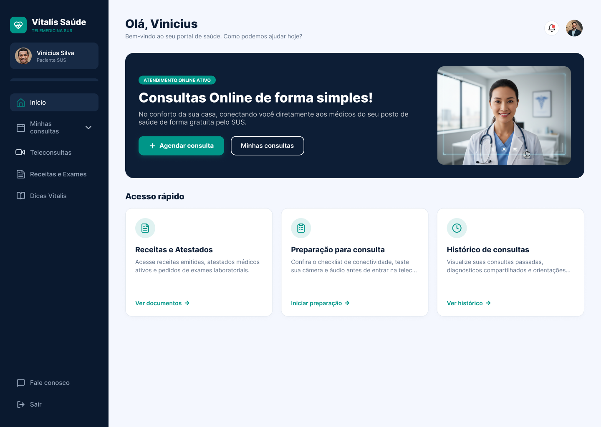
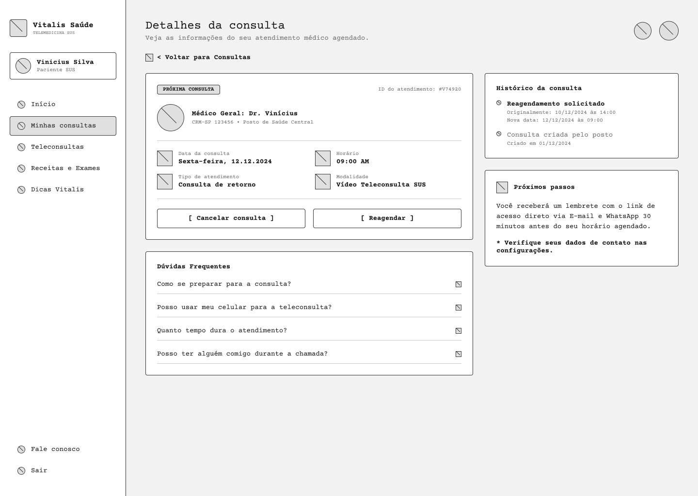
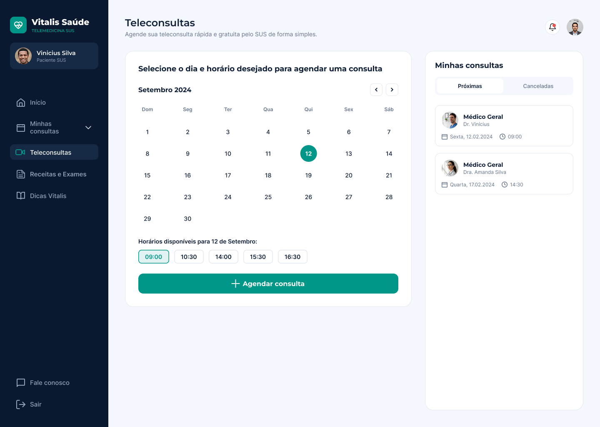
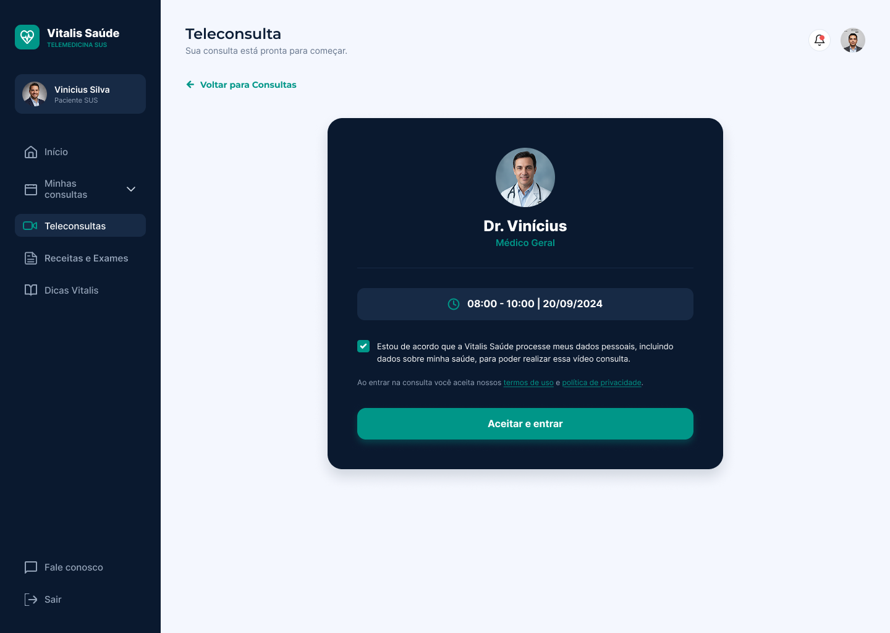
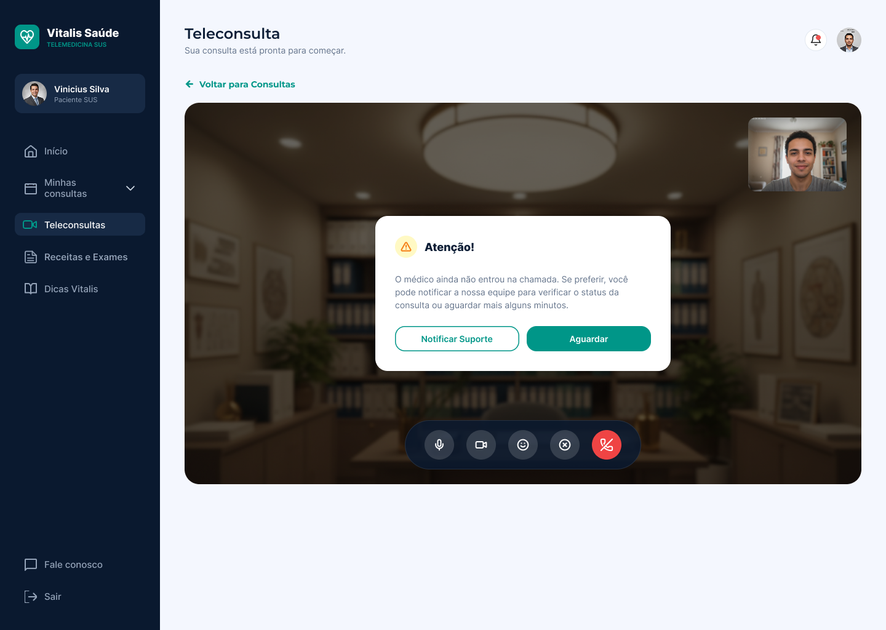
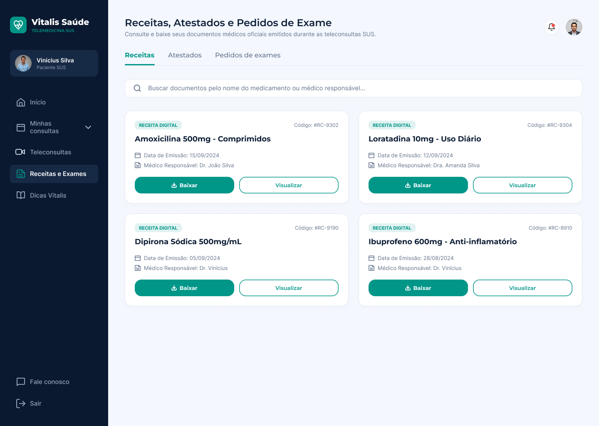
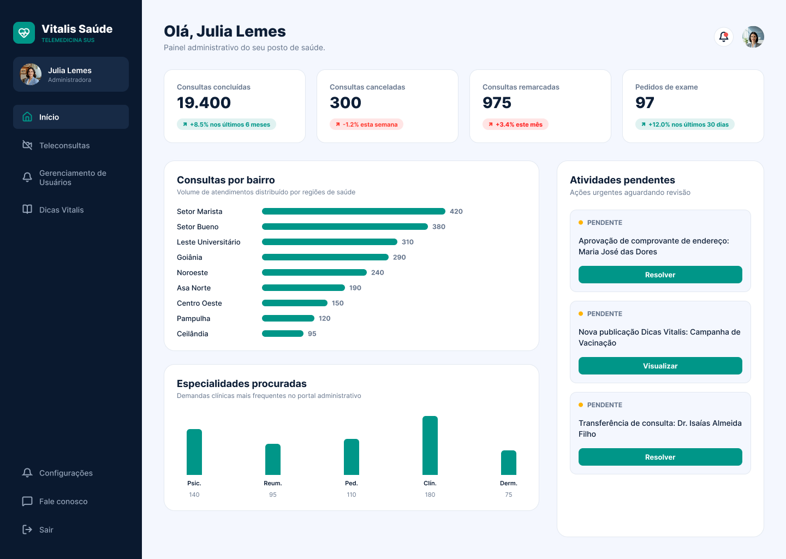
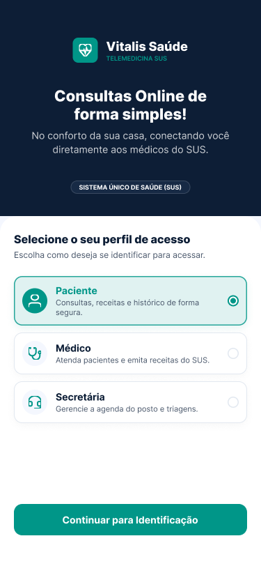
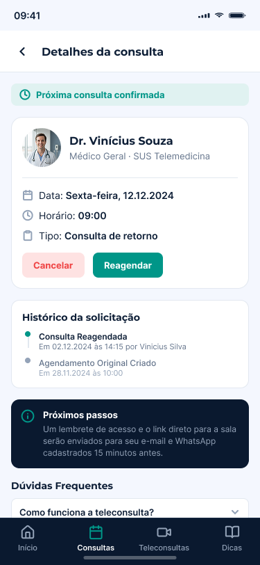
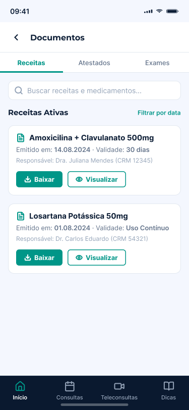

VITALIS SAÚDE · PRODUCT DESIGN · UX/UI
Telemedicina para três perfis muito diferentes em um mês
Tirar pacientes de filas físicas e desafogar a triagem manual em postos de saúde — desenhando um ecossistema que servisse com igual facilidade a paciente, médico e secretária, cada um com proficiência digital e necessidades distintas.
- MEU PAPEL
- UX/UI · Research · Design system
- DURAÇÃO
- ≈ 1 mês · prazo apertado
- FERRAMENTAS
- Figma & FigJam
- PLATAFORMA
- Web · desktop & mobile

só ecossistema
Resumo do case
Contexto
O produto e o que estava em jogo
A Vitalis Saúde foi concebida para aliviar o gargalo de atendimento em postos de saúde da rede pública. A proposta era um sistema ponta a ponta que otimizasse o agendamento de consultas, a teleconsulta e a emissão de documentos médicos digitais (receitas, atestados e pedidos de exame).
Não era um app único: era um ecossistema que precisava servir, com a mesma clareza, a três perfis com rotinas e níveis de familiaridade digital bem diferentes.
Perfis atendidos
Acesso fácil e direto, focado em agendar e entrar na teleconsulta rápido. Uso majoritariamente mobile.
Histórico do paciente acessível, chamada de vídeo integrada e emissão de guias. Uso desktop.
Gestão de filas, aprovação de comprovantes e agendamentos, sem o preenchimento manual de antes. Uso desktop.
Contexto · O problema real
Filas físicas extensas e uma triagem manual que travava todo mundo
Pacientes enfrentavam horas em filas presenciais só para agendar um retorno simples, pegar uma receita atualizada ou retirar um atestado. Do outro lado do balcão, as secretárias se sobrecarregavam com preenchimento manual, e a falta de um acompanhamento unificado alimentava o absenteísmo nas consultas.
O desafio central era desenhar um ecossistema que servisse com igual facilidade a três perfis distintos, com níveis de proficiência digital muito variados — do paciente idoso que abre o celular pela primeira vez ao médico que precisa de eficiência entre uma consulta e outra.
Processo · Ponto de partida
Antes de desenhar, entender o negócio e o mercado
Com um prazo curto, não dava para improvisar. Estruturei a partida em passos objetivos, cada um respondendo a uma pergunta concreta antes de eu tocar em qualquer tela:
A partir da documentação do cliente e das regras de negócio, mapeei os perfis de acesso e o que cada um pode fazer no sistema — a base que definiu permissões, telas e fluxos antes do desenho. Cada perfil ganhou um nível de acesso e um posto de saúde designado.
Agenda consultas, entra na teleconsulta e acessa seus documentos. Acesso restrito aos próprios dados.
Gerencia usuários e perfis de acesso, com permissões configuráveis (ex.: Administrador, Consultas, Receitas).
Faz a triagem: aprova comprovantes, gerencia a fila e os agendamentos do posto designado.
Atende as teleconsultas, acessa o histórico do paciente e emite receitas, atestados e pedidos de exame.
Os perfis vêm da documentação e das regras de negócio do cliente; neste projeto não houve pesquisa de persona com usuário final.
Processo · Arquitetura
Sitemap e user flow por perfil
Mapeei a jornada de cada perfil antes dos wireframes, para dimensionar o produto — quantidade de telas e estimativa de tempo de desenvolvimento — e alinhar isso com o time desde o início.

Solução · Fundação
Um style guide antes de qualquer tela
O cliente já tinha logomarca, paleta e fontes definidas. Meu primeiro passo de design foi construir um style guide no Figma para padronizar esses elementos e garantir consistência entre web e mobile — e entre os três perfis. Não foi um design system: é a gramática visual que as telas herdam, documentada abaixo com os valores realmente aplicados.
O teal é reservado a ação e status — nunca a texto corrido. Na auditoria de contraste ele passa em AA para texto grande e componentes (3.7:1), então rótulos de botão vivem em 15px/600 sobre o preenchimento sólido, nunca em teal sobre branco.
Nada abaixo de 15px em texto de leitura — o público inclui idosos e telas de baixa qualidade. Uma família só, cinco níveis: menos decisão na hora de desenhar, menos deriva entre os três perfis.
Todo alvo interativo tem 44px de altura mínima. Estados nunca dependem só de cor: hover escurece, disabled perde saturação e contraste de texto, foco herda o outline do navegador.
Grade de 8 em todo padding, gap e altura de componente. É o que mantém três perfis e duas plataformas parecendo o mesmo produto sem precisar de um design system formal.
Este projeto não teve um design system: não houve biblioteca versionada, governança ou documentação de contribuição. O que existiu foi este style guide: tokens e componentes padronizados no Figma antes das telas. Os valores acima foram extraídos das interfaces entregues.
Solução · Estrutura antes da estética
Wireframes de baixa fidelidade primeiro
Escolhi começar por wireframes de baixa fidelidade de propósito: definir estrutura e hierarquia antes da estética permitia ajustes rápidos e, principalmente, alinhar expectativas com o cliente antes de investir na alta fidelidade.

Solução · Decisões
Acessibilidade como requisito do público
Público de saúde pública, muitos idosos, dispositivos modestos e conexões instáveis: cada decisão de UI partiu de uma evidência concreta desse contexto.
Alto contraste
EvidênciaUso frequente ao ar livre e em telas de baixa qualidade prejudica a leitura.
DecisãoPaleta de alto contraste e tipografia legível, testadas para leitura sob luz forte.
Botões grandes
EvidênciaParte do público é idosa e tem menos precisão de toque.
DecisãoAlvos de toque generosos e ações principais sempre evidentes.
Versão mobile leve
EvidênciaConexões de baixa largura de banda e aparelhos de baixo desempenho.
DecisãoMobile enxuto, focado no essencial do paciente, para carregar rápido.
Solução · A experiência final
Uma interface para cada perfil, um só sistema
Com o style guide e os wireframes validados, subi a fidelidade. Desktop para quem opera o dia a dia; mobile leve para o paciente. Abaixo, a jornada do paciente ponta a ponta.
Um portal claro, com o essencial primeiro
Início com acesso rápido às tarefas mais comuns — agendar, ver consultas, receitas e atestados — e um caminho curto até a teleconsulta. O essencial primeiro, sem menu profundo.
Escolher dia e horário sem depender da fila do posto

Calendário direto, horários em botões grandes e as próximas consultas sempre à vista — marcar um retorno deixa de exigir uma ida presencial.
Consentimento explícito e estados de espera bem resolvidos


Antes de entrar, o paciente dá o consentimento de tratamento de dados de forma clara. Na sala, o estado “o médico ainda não entrou” oferece caminho (aguardar ou notificar o suporte) em vez de deixar a pessoa perdida.
Receitas, atestados e exames sem voltar ao balcão

Documentos emitidos nas teleconsultas ficam disponíveis para baixar ou visualizar — uma das dores que mais levava gente de volta à fila presencial.
A gestão do posto num só painel

A visão de gestão reúne o panorama do posto e uma fila de atividades pendentes com ação clara — aprovar comprovantes, revisar publicações e resolver transferências sem sair da tela.
A mesma experiência, enxuta para o celular
Para conexões instáveis e aparelhos modestos, a versão mobile prioriza o essencial do paciente — identificar-se, acompanhar a consulta e acessar receitas — com alvos de toque generosos.



Impacto · Gestão sob pressão
Entregar três perfis, em um mês, sem perder a base
A restrição de prazo foi o eixo do projeto. Foi ela que justificou começar pela pesquisa e pelos wireframes de baixa fidelidade — priorizar o que destrava decisão em vez de perseguir o pixel cedo demais. Partir dos perfis já descritos na documentação do cliente e construir um style guide logo no início foram escolhas para ganhar velocidade sem abrir mão de consistência.
Na prática, isso significou decidir cedo o que aprofundar e o que deixar para uma fase seguinte — e a pesquisa com usuário final ficou nessa segunda lista.
Impacto · Escopo entregue
O que o projeto entregou
O escopo cobriu três perfis de usuário (paciente, médico e secretária) em duas plataformas (desktop e mobile), a partir de um style guide próprio e dos fluxos completos mapeados por perfil — do agendamento à teleconsulta e à emissão de documentos digitais. As telas em alta fidelidade deste case destacam a jornada do paciente; os fluxos de médico e secretária estão mapeados no sitemap acima. São contagens de entregável, não métricas de resultado.
Impacto · Retorno
No momento da escrita deste case, a plataforma ainda não havia sido lançada, então não há dados de uso em produção. O retorno do cliente sobre as entregas foi relatado como positivo — e os indicadores de sucesso ficariam para uma fase de acompanhamento após o lançamento.
Aprendizados
O que ficou desse projeto
- Com um mês para três perfis, decidi cedo o que ganharia alta fidelidade (a jornada do paciente) e o que ficaria mapeado só no fluxo (médico e secretária).
- Começar por estrutura (flow e wireframe) antes da estética foi o que tornou o mês viável.
- Uma pesquisa própria com usuários dos três perfis, em vez de partir só da documentação do cliente.
- Acompanhar o uso após o lançamento para validar as decisões de acessibilidade com dado real.
Tem um fluxo assim no seu produto?
Me conta o contexto — respondo em até um dia útil.